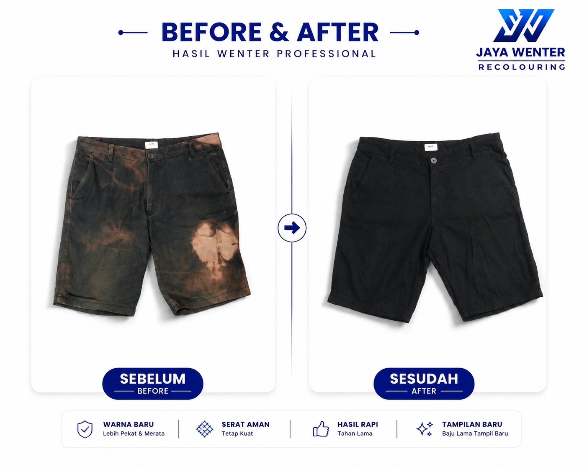

Mengembalikan warna jeans, jaket, kaos, celana, hoodie, sweater dan seragam yang pudar agar lebih pekat, merata dan memiliki tampilan baru.
Pesan Sekarang
JAYA WENTER merupakan jasa wenter Malang yang melayani pewarnaan ulang pakaian pudar seperti jeans, jaket, kaos, celana, hoodie, sweater, tas dan seragam.
Dengan proses wenter profesional, warna pakaian kembali lebih pekat, merata dan nyaman digunakan. Kami melayani pelanggan di Malang maupun seluruh Indonesia melalui layanan pengiriman.
WARNA BARU
Lebih Pekat & Merata
SERAT AMAN
Tetap Kuat
HASIL RAPI
Tahan Lama
TAMPILAN BARU
Mengubah Baju Lama Anda Agar Memiliki Tampilan Yang Baru
Hasil wenter jeans, jaket, kaos, celana, tas dan berbagai pakaian yang telah kami kerjakan.
Wenter Jeans
Mengembalikan warna jeans pudar agar kembali lebih pekat dan merata.
Wenter Jaket & Hoodie
Pewarnaan ulang jaket & hoodie berbahan katun maupun jeans.
Wenter Kaos
Membuat warna kaos kusam kembali lebih segar dan menarik.
Wenter Celana
Cocok untuk celana kerja maupun celana kasual berbahan katun dan jeans yang mulai memudar.
Wenter berbagai jenis pakaian lain berbahan katun
Mengembalikan warna berbagai jenis pakaian berbahan katun agar tampak lebih rapi.
Tersedia 5 warna pilihan.
Hitam
Biru Tua
Hijau Tua
Coklat Tua
Abu-Abu Tua
| Celana Panjang | Rp30.000 |
| Jaket | Rp30.000 |
| Hoodie | Rp30.000 |
| Sweater | Rp30.000 |
| Kemeja | Rp30.000 |
| Kaos | Rp30.000 |
| Tas | Rp30.000 |
| Topi | Rp25.000 |
| Sepatu | Rp30.000 |
| Ukuran Jumbo | Menyesuaikan |
⭐⭐⭐⭐⭐
Mikazen
Hasilnya bagus dan sesuai,
rekomended. Saya wenter 2 celana
dan 2 jaket. Terima kasih.
⭐⭐⭐⭐⭐
Rizky Safitri
Hasilnya bagus 😍😍😍
⭐⭐⭐⭐⭐
Pelanggan Google
Banyak pelanggan mempercayakan jeans, jaket, kaos dan seragam mereka kepada JAYA WENTER.
Lihat lebih banyak ulasan pelanggan melalui Google Maps:
Jasa wenter atau jasa wantex adalah layanan pewarnaan ulang pakaian atau barang berbahan kain yang warnanya sudah pudar sehingga tampil lebih pekat dan segar kembali.
Kami khusus menerima pakaian dan barang berbahan katun serta jeans seperti celana jeans, kaos, kemeja, jaket, hoodie, sweater, rok, topi, tas berbahan katun atau kanvas, sepatu berbahan kain tertentu, serta jenis pakaian lainnya yang berbahan katun atau jeans.
Tidak. Kami hanya menerima bahan katun dan jeans. Beberapa bahan yang tidak bisa diwenter dengan pewarna kami diantaranya :
Dalam banyak kasus warna pakaian yang pudar dapat menjadi jauh lebih pekat dibanding kondisi sebelum diwenter, tergantung warna awal dan kondisi bahan.
Hitam, Biru Tua, Hijau Tua, Coklat Tua, dan Abu-Abu Tua.
Estimasi pengerjaan sekitar 3–7 hari atau menyesuaikan banyaknya pakaian dan antrian.
Bisa. Kami melayani pelanggan dari seluruh Indonesia melalui jasa pengiriman.
Pakaian harus dipastikan berbahan katun atau jeans. Dan pastikan sudah bersih dan bebas dari:
Cara Menghitamkan Celana Jeans Kusam Tanpa Beli Baru
Pelajari penyebab warna jeans memudar dan cara menghitamkannya kembali agar tampak lebih pekat tanpa harus membeli baru.
Kami membuka peluang kerja sama bagi pemilik laundry yang ingin menambah layanan wenter kepada pelanggan.
Anda dapat menawarkan layanan wenter tanpa perlu memiliki peralatan maupun proses produksi sendiri.
Cocok untuk laundry yang ingin meningkatkan omzet dan menambah layanan kepada pelanggan.
Isi formulir pendaftaran dan tim kami akan menghubungi Anda untuk menjelaskan skema kerja sama agen laundry.
Percayakan kepada kami untuk mengembalikan warna pakaian Anda menjadi lebih pekat, merata dan tampak seperti baru kembali. Silahkan konsultasikan terlebih dahulu kepada kami.
Kami hanya menerima pakaian dan barang berbahan katun atau jeans. Pastikan pakaian yang Anda wenter berbahan katun atau jeans.
Pastikan tidak ada uang, dokumen, kartu, kunci, perhiasan, atau barang berharga lainnya yang tertinggal di dalam pakaian.
Kami tidak bertanggung jawab atas barang yang tertinggal.
Proses wenter melibatkan pemanasan hingga sekitar 75°C, perendaman, dan pengadukan berulang.
Pastikan pakaian dalam kondisi layak untuk diproses.
Kami tidak bertanggung jawab atas kerusakan yang disebabkan oleh kondisi pakaian sebelum diwenter seperti kain rapuh, jahitan lemah, sablon retak, bordir rusak, resleting rusak, atau kerusakan akibat usia pakaian.
Pakaian harus bebas dari noda minyak, parfum, deodorant, pemutih, cat, lem, tinta, dan noda lain yang menghambat penyerapan warna.
Hasil akhir dipengaruhi warna awal, jenis bahan, kondisi kain, dan usia pakaian.
Hasil tidak dapat dijamin sama persis dengan warna asli saat masih baru.
Pelanggan memahami bahwa warna hasil akhir dapat berbeda dari contoh warna, foto referensi, atau perkiraan awal karena karakteristik bahan, warna awal, kondisi kain, usia pakaian, serta kondisi barang yang berbeda-beda.
Kami berhak menolak pengerjaan barang yang:
Keputusan penerimaan atau penolakan barang sepenuhnya menjadi pertimbangan JAYA WENTER berdasarkan kondisi barang yang diterima.
Komplain terkait hasil pengerjaan wajib disampaikan paling lambat 3 (tiga) hari setelah barang diterima pelanggan.
Komplain yang disampaikan setelah batas waktu tersebut dianggap tidak dapat diproses.
Pelanggan wajib menyampaikan komplain secara jelas disertai foto atau informasi yang diperlukan agar dapat dilakukan pemeriksaan dan tindak lanjut.
Dengan menyerahkan, mengirimkan, atau memesan layanan JAYA WENTER, pelanggan dianggap telah membaca, memahami, mengetahui, dan menyetujui seluruh syarat dan ketentuan yang berlaku pada layanan JAYA WENTER.
Pelanggan juga memahami bahwa hasil akhir pengerjaan dapat dipengaruhi oleh kondisi awal barang, jenis bahan, usia pakaian, serta faktor teknis lainnya yang telah dijelaskan dalam ketentuan ini.
Apabila terdapat hal-hal yang belum diatur dalam ketentuan ini atau terjadi perbedaan pendapat antara pelanggan dan JAYA WENTER, maka penyelesaiannya akan diupayakan terlebih dahulu melalui musyawarah untuk mencapai kesepakatan bersama yang baik dan adil bagi kedua belah pihak.